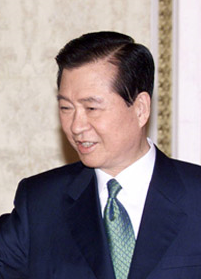

김대중(金大中, 1924년 1월 6일 ~ 2009년 8월 18일)은 대한민국의 제15대 대통령이다.
전라남도 신안군 하의도에서 태어났고, 제6·7·8·13·14대 국회의원을 지냈다. 군부 정권의 위협으로 여러 번 죽을 고비를 넘기면서 김영삼과 함께 오랫동안 민주 진영의 지도자로 활동하며 군사 정권에 항거하였다. 김대중은 군부 정권으로부터 납치와 가택연금, 투옥 등의 여러 탄압을 받았다. 1987년 6월 민주 항쟁 이후에는 통일민주당의 상임고문으로 활동하며 민주화추진협의회를 구성해 이른바 민주 진영을 구축하였다. 인권 향상과 남북 관계의 진전에 기여한 공로로 2000년 임기 중에 한국인 역사상 최초로 노벨 평화상을 수상하였다. 2000년 노르웨이 라프토(Rafto) 인권상, 1998년 무궁화 대훈장, 1998년 국제인권연맹 인권상, 1999년 미국 필라델피아 자유의 메달, 북미주 한국인권연합 인권상, 미국 조지 미니(George Meany) 인권상, 브루노 크라이스키(Bruno Kreisky) 인권상을 수상하였다. 연설에 능하였으며, 국회에서 가장 오래 연설한 기록으로 기네스북 증서를 받았다. 추운 겨울에도 온갖 풍상(風霜)을 참고 이겨내는 인동초(忍冬草)로 비유되어 불리기도 하였다.
구글에서 더 찾아보자 